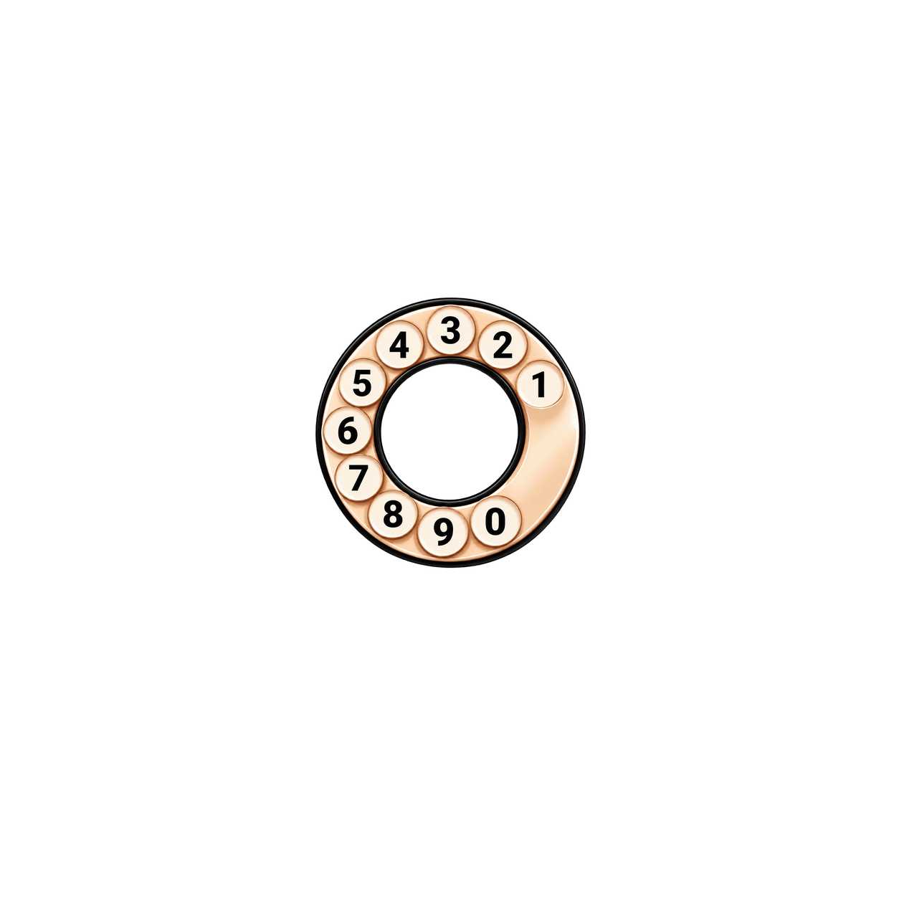

Composer le code à 4 chiffres
4
4
4
4
chiffres restants
Indice : Code de la boîte à clés
↻ Recommencer

Découvrir la Genèse
Mode d’emploi
← Retour au menu
Genèse
Mode d’emploi
Sans USB-C
Avec USB-C
1 / 5
← Précédent
Étape suivante →